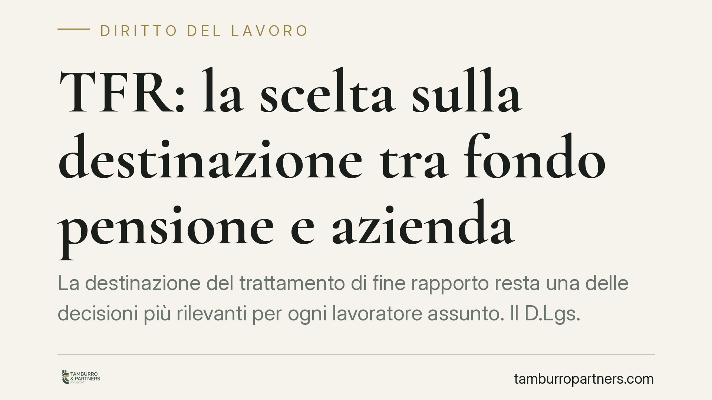

TFR: la scelta sulla destinazione tra fondo pensione e azienda
La destinazione del trattamento di fine rapporto resta una delle decisioni più rilevanti per ogni lavoratore assunto. Il D.Lgs. 252/2005 fissa un termine di sei mesi dall'assunzione per scegliere se conferire il TFR a una forma di previdenza complementare o mantenerlo in azienda. Vediamo regole, silenzio-assenso e cosa valutare prima di decidere.

Il contesto
La destinazione del trattamento di fine rapporto (TFR) è una scelta che riguarda ogni lavoratore del settore privato al momento dell'assunzione. Non è una formalità: incide sulla somma che il lavoratore percepirà alla cessazione del rapporto e sul modo in cui quella somma si rivaluta nel tempo.
Le alternative sono due: conferire il TFR maturando a una forma di previdenza complementare (fondo pensione negoziale, aperto o PIP) oppure lasciarlo maturare in azienda. La scelta è personale e va formalizzata per iscritto al datore di lavoro.
Nota sulle fonti. Circolano notizie relative a un nuovo modulo di comunicazione (indicato come "TFR3") e a un decreto interministeriale con termine ridotto a 60 giorni. Allo stato non risultano estremi ufficiali verificabili (numero di decreto, pubblicazione in Gazzetta Ufficiale) che confermino tali dati. In assenza di riscontro certo, l'inquadramento che segue si basa sulla disciplina vigente. Chi abbia ricevuto una comunicazione specifica dal proprio datore verifichi caso per caso il termine effettivamente indicato.
Inquadramento normativo
La materia è regolata dall'art. 8 del D.Lgs. 5 dicembre 2005, n. 252, in tema di previdenza complementare.
L'art. 8, comma 7 stabilisce che il lavoratore deve manifestare la propria scelta sulla destinazione del TFR maturando entro sei mesi dalla data di assunzione. La scelta è esplicita quando il lavoratore comunica per iscritto se conferire il TFR a una forma pensionistica complementare o mantenerlo presso il datore.
Se entro i sei mesi il lavoratore non esprime alcuna scelta, opera il meccanismo del cosiddetto silenzio-assenso (conferimento tacito): il TFR maturando confluisce alla forma di previdenza complementare individuata dai criteri di legge (di norma il fondo previsto dal contratto collettivo applicabile). È il datore di lavoro a dover informare adeguatamente il lavoratore prima della scadenza.
Reversibilità della scelta
Occorre distinguere due situazioni.
Il conferimento del TFR maturando a una forma pensionistica complementare — sia esplicito sia tacito — è, per il maturando, una scelta non revocabile: una volta destinato al fondo, il TFR che matura da quel momento resta al fondo.
La scelta di mantenimento in azienda, invece, è modificabile: il lavoratore che abbia deciso di lasciare il TFR presso il datore può in seguito optare per il conferimento a una forma complementare. Il passaggio inverso, dal fondo all'azienda, non è consentito per il maturando.
Implicazioni pratiche
La differenza principale è economica.
Il TFR mantenuto in azienda si rivaluta secondo il criterio legale fissato dall'art. 2120 del codice civile: 1,5% fisso annuo più il 75% dell'indice ISTAT dei prezzi al consumo. È una rivalutazione prevedibile ma tendenzialmente contenuta.
Il TFR conferito a un fondo pensione viene investito sui mercati finanziari secondo il comparto scelto: il rendimento è variabile, potenzialmente più alto ma non garantito, e soggetto all'andamento dei mercati. Al conferimento si aggiungono, di regola, un trattamento fiscale più favorevole in fase di erogazione e — nei fondi negoziali — l'eventuale contributo del datore previsto dal contratto collettivo.
Non esiste una soluzione migliore in assoluto: la valutazione dipende da orizzonte temporale, propensione al rischio, presenza di contribuzione datoriale e situazione fiscale del singolo.
Cosa fare in concreto
- Verifica il termine. Controlla la data di assunzione e il termine di sei mesi entro cui esprimere la scelta; se hai ricevuto una comunicazione con un termine diverso, chiedi conferma degli estremi normativi al datore.
- Formalizza la scelta per iscritto. Non lasciare decorrere il termine se intendi mantenere il TFR in azienda: in mancanza opera il conferimento tacito al fondo.
- Confronta i numeri. Metti a confronto la rivalutazione ex art. 2120 c.c. con il rendimento storico e i costi del comparto del fondo, e considera l'eventuale contributo del datore.
- Valuta gli effetti fiscali. Verifica la tassazione applicabile nelle due ipotesi, che può incidere in modo significativo sull'importo netto.
- Per i datori di lavoro: consigliamo di documentare l'informativa fornita al lavoratore entro i termini di legge, per assolvere l'obbligo informativo e prevenire contestazioni.
Data la rilevanza patrimoniale della decisione, consigliamo di richiedere una verifica specifica sulla propria posizione prima di formalizzare la scelta o lasciare decorrere il termine.
---
Contributo informativo a cura di Tamburro & Partners - Avv. Giuseppe Tamburro. Non costituisce parere legale.
Ogni storia di lavoro ha i suoi tempi.
Se gestisci HR e vuoi un confronto su contenzioso, ispezioni o licenziamenti, scrivi allo studio. Ti rispondiamo entro un giorno lavorativo.